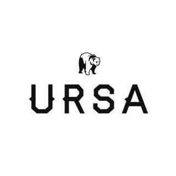

Trade Mark Journal No.2025/017 25 April 2025
UK00004185034 7 April 2025 (25,28)

- Class 25
- Apparel; Fightwear; Clothing; fightwear; sportswear; rash guards; compression tops; compression shorts; grappling shorts; training shorts; martial arts uniforms; base layers; t-shirts; hoodies; sweatshirts; jackets; vests; tank tops; joggers; sweatpants; leggings; shorts; underwear; sports bras; socks; headbands; hats; caps; beanies; tracksuits; warm-up suits; activewear; outerwear; footwear; shoes; sandals; slides; swim wear; nightwear; jiu jitsu belts; gi uniforms; balaclavas; infant wear; childrens clothing.
- Class 28
- Knee guard; Ankle brace; Knee brace; Elbrow brace; Shoulder brace; Wrist brace; Back support; calf sleeve; thigh sleeve; compression supports for sports purposes; protective padding for athletic use; MMA gloves; boxing gloves; grappling gloves; combat sports gloves; protective gloves for athletic use; Punching bags; heavy bags; speed bags; freestanding punching bags; training equipment for combat sports; strike pads; grappling dummies; Jiu-jitsu dummies; training dummies for martial arts; combat training dummies; sparring dummies; Sports tape; athletic tape; Jiu-Jitsu tape; grip tape for martial arts; training tape for combat sports; Finger guards for sports; protective finger guards for combat sports; Brazilian Jiu-Jitsu gloves; training gloves for Brazilian Jiu-Jitsu; combat sports gloves; Resistance bands; balance boards; agility ladders; jump ropes; foam rollers; push-up bars; training masks; exercise mats; stretch bands; fitness gloves; kettlebells; medicine balls; dumbbells; hand grips for fitness; abdominal trainers; strength training equipment; Mitts for martial arts; focus mitts; target mitts; punching mitts; kick shields; body protectors for combat sports; sparring pads; kickboxing pads; protective headgear for combat sports; chest protectors; throat protectors; arm pads for combat sports; shin protectors; elbow guards; knee pads for sports.
UrsaGuard LTD